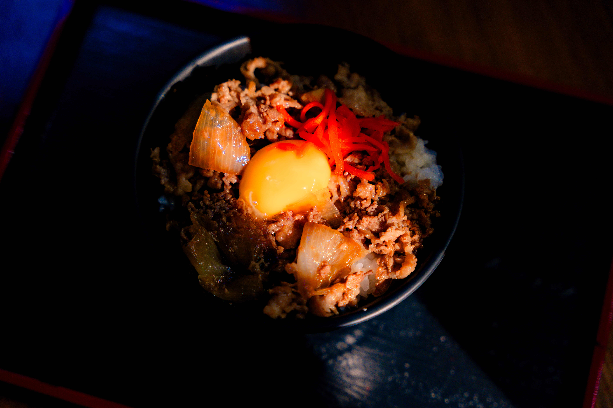
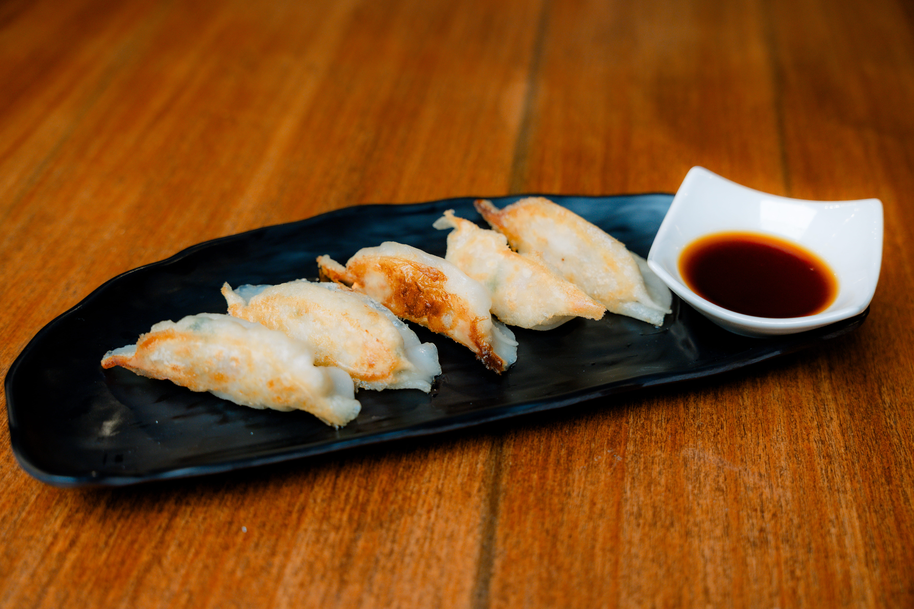

Shofuku
Japanese
Restaurant
"Laugh and the world laughs with you"

About Us
Seven dishes. Six drinks. That's what we started with. Our initial menu was lean but perfectly curated. Our offerings have grown a lot since then, but our commitment to perfection remains.



Experience Excellent Japanese Dining
At Shofuku
The Hood, Sto Rosario Street, Barangay Sto Domingo, Angeles City, Philippines 2009shofuku.ph@gmail.com · +63 994 931 0523